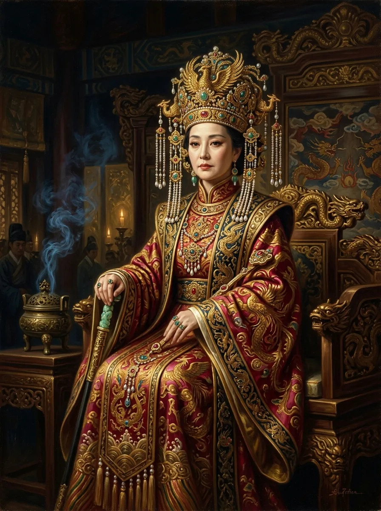

Empress Wu Zetian
武则天
The only female emperor in Chinese history reigning in her own right; architect of meritocratic civil service exams who presided over fifty years of prosperity.
«Let my monument stand blank, that history itself may judge my reign.»
The Blank Stele at Qianling is a documented artifact of sovereign self-assurance.
۰۱
What She Did (The Record)
655 AD
Becomes empress consort; assumes administrative co-regency during Emperor Gaozong's chronic illness.
690 AD
Proclaims the Zhou Dynasty, ascending the imperial throne as sovereign Huangdi.
695 AD
Transforms the Imperial Examination system, dismantling aristocratic monopoly in favor of talent.
۰۲
What She Was Called (Labels & Lineage)
Ruthless Usurper & Monstrous Tyrant
✎ Alternative Reading & Critique
Traditional Confucian historiography attributed cosmic depravity to acts categorized as statecraft under male rulers.
۰۳
Personality Reading (Non-Diagnostic)
Methodological Note: This is not a clinical diagnosis. Retrospective diagnosis without clinical interview is epistemologically impossible. What follows is a non-pathologizing synthesis of documented history.
Wu Zetian presided over an era of agricultural expansion, tax reduction, and cultural flourishing. Her systemic opening of the civil service to merit transformed imperial governance for centuries.
۰۴
Primary & Secondary Sources
- [Secondary Source] Rothschild, N. Harry. Wu Zhao: Being Woman in the Court of China. Pearson, 2008.
- [Secondary Source] Eisenberg, Andrew. Kingship in Early Imperial China. Brill, 2008.